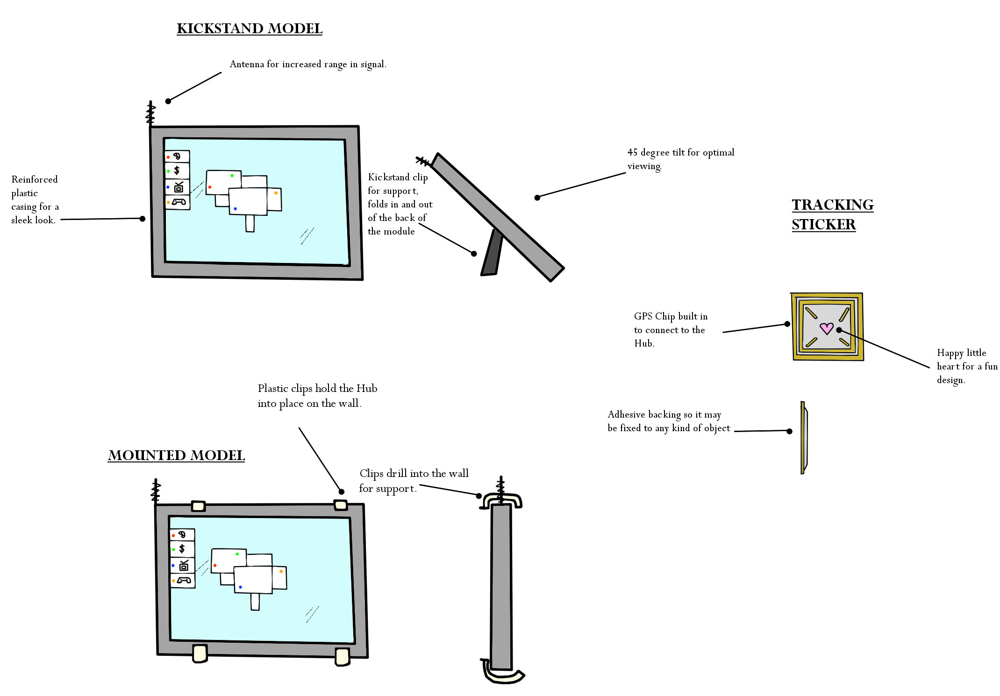

Project Idea and Motivation
Our groups project idea has been derived from the idea used by Jade Gower in the first assignment. Her idea was essentially a wireless hub which can be linked to portable devices, such as key fobs, remotes and mobile phones, with a wireless chip. A corresponding button on the hub could then be pushed to make the device emit a sound so it could be found. As a group we have expanded on this idea taking it a few steps forward to pretty much offer the same functionality but through different means. The motivation behind the idea is simple, people lose stuff and they want to easily find it. Jades original assignment illustrates this by citing A 2017 study conducted by Bluetooth tracker company Tile (Brown, 2017)1, which shows that lost items have cost Australians $1.2Billion in the previous year (2018) alone.
Project Features
An early rendition of what our project might look like:
Technologies and features our project will use:
- Bluetooth (5.1) device tracking
- GPS Tracking
- Wireless Charging
- Room Mapping
- Security Software
Range won’t be an issue for us because we intend to have Bluetooth receivers which will be placed throughout the house, these will be always on but very low power consumption. They will connect to each other as one device, then to a wireless network to send/receive information to the main hub. The main hub will illustrate the location of the device on the screen. Bluetooth 5.1 has been cited (Hoffman, 2019)2 as being capable of giving location information to accuracy within 1cm since major improvements have been made to Angle of Arrival (AoA) and Angle of Departure (AoD) which are used for location and tracking of devices, making it ideal for things like finding a remote without taking off ALL the couch cushions. But it also presents the limitation, albeit it a small one, that multiple receivers would have to be within Bluetooth range of each other (around 10m-20m).
We will offer the option of GPS chips (Thomas, 2016)3, the reason we would use two technologies is simple, range and cost. A Bluetooth only tracker is very cheap compared to an always on GPS tracker which would also need to include a pre-paid sim card. However, due to range issues, without using expensively made and highly powered Bluetooth receivers and chips, range is limited to around 10m-20m, although this is a conservative estimate. To compensate for short range at the cost of financial expense, a GPS chip could be placed on a phone or wallet and used to track a device pretty much anywhere so if it’s lost or stolen outside range of the Bluetooth receivers it can still be located. However, this more expensive option would not be necessary for things like a remote control or possibly a key fob, or it could be, we just wish to offer some consumer choice. We would potentially include Wi-Fi in the GPS chip as well so that by combining Wi-Fi location tracking with GPS we could track devices more accurately and in areas with poor GPS accessibility/accuracy, such as cities and underground. This would of course also come down to a cost vs need analysis.
Each Bluetooth receiver device will also incorporate automatic detection of activated chips within its range so that the chip batteries can be charged wirelessly. New technology (Manz, 2018)4 has recently emerged where wireless charging ranges have increased from requiring direct contact to being capable of distances up to roughly 15 feet (4.5 meters). We would also potentially offer an option where the chip can be charged via a cable from the hub or a USB port, however, this would require further research as we wish to keep the tracking chips as small and lightweight as possible to increase battery life and keep them aesthetically pleasing.
During hub setup we will use software like PLNAR (Plnar.co, 2019)5, a room-mapping app that runs on Apple’s ARKit, which will map out the area within range of each receiver. This will either be run from a user’s phone or from the receivers themselves. We are leaning towards a phone so as to save overall cost when manufacturing the receivers however we will need to delve further into this to weigh up what the actual costs would be in creating and maintaining an application on multiple platforms as opposed to having something simple worked into the receiver which would also mean we are less likely to lose customer base. This information will then be displayed on the HUB when locating a device so that the user is easily able to identify location within the house. GPS tracking outside of this perimeter would be displayed using google map information.
The hub would be able to connect to a user’s telephone using an app so that devices could be tracked, and information displayed on a user’s phone. We would also incorporate some additional software whereby if the phone was stolen the hub could send a signal to the phone application to take a photo which was then uploaded to a cloud server which could be used when pursuing criminal charges.
Summary
In summary our project has a wide range of applications which could be used not just by personal individuals but for various commercial applications, such as integration with various security systems. Advances in Bluetooth have made the system much less easily compromised than previous models and GPS in combination with WIFI tracking have been successfully used for years. By integrating these models into an accessible and easy to use package, which has low cost options and powerful applications at an additional cost, we feel we have come up with a device that appeals to a multitude of users from the old lady who doesn’t want to lose her remote, to the businessman who needs to be able to track and secure his devices throughout the world.